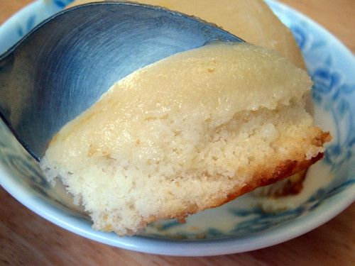

Pudding Cake

Photo: joyosity (CC BY 2.0)
Directions
- Mix cake mix and pour into 13 x 9 inch pan. Bake 20-25 minutes. Cool. Mix pudding using a little less milk than called for. Blend pudding and cream cheese until smooth, spread over cooled cake, spread pineapple over all, spread cool whip over that, spread walnuts over cream dot with cherries.
- Mix cake mix and pour into 13 x 9 inch pan. Bake 20-25 minutes. Cool. Mix pudding using a little less milk than called for. Blend pudding and cream cheese until smooth, spread over cooled cake, spread pineapple over all, spread cool whip over that, spread walnuts over cream dot with cherries.
https://baron-3dl.github.io/normans-kitchen/recipe/pudding-cake.html